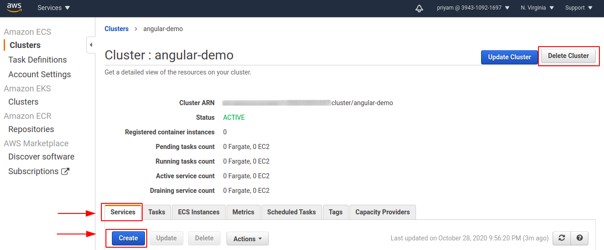

Setting Up Application through AWS
Objective
This section aims to set up the application angular-realworld-example-app to provide a solution to the fourth point of the problem statement under Task 1.
Setting Up the application manually
Firstly, I installed the application manually and ran it on my browser to know how it works. So I cloned the application in my terminal
git clone https://github.com/gothinkster/angular-realworld-example-app.git
- Install npm
sudo apt update
sudo apt install nodejs
sudo apt install npm
nodejs -v
- Install Yarn (https://classic.yarnpkg.com/en/docs/install/#debian-stable)
curl -sS https://dl.yarnpkg.com/debian/pubkey.gpg | sudo apt-key add -
echo "deb https://dl.yarnpkg.com/debian/ stable main" | sudo tee /etc/apt/sources.list.d/yarn.list
sudo apt update && sudo apt install yarn
export PATH="$PATH:`yarn global bin`"
yarn install
yarn -version
- Install Angular CLI(https://angular.io/cli)
npm install -g @angular/cli
- Got an error as on running
ng serveopens editor instead of loading local URL. This is the terminal editor on the 'ng' alias. I uninstalled it with:
sudo apt purge ng-common ng-latin
Now again I ran ng serve and in the browser I typed localhost:4200 (4200 is the default port). The application was successfully installed and window that opened is shown below:

Setting Up the application through Docker
I firstly cloned the application and in the cloned folder made a file Dockerfile. In this, I used a node image
nano Dockerfile
I wrote this code in Dockerfile
#getting base image
FROM node
MAINTAINER Priyam Singh <2020priyamsingh@gmail.com>
RUN apt-get update
COPY . /src
WORKDIR /src
#Installing Angular CLI
RUN npm install
RUN npm install -y -g @angular-devkit/build-angular
RUN npm install -y -g @angular/cli
EXPOSE 4200
CMD ["ng", "serve", "--host", "0.0.0.0"]
- My application was not running on browser but it was getting compiled because I made a mistake that I was not writing "--host", "0.0.0.0" (--host 0.0.0.0 to listen to all the interfaces from the container).
- I was facing many errors such as packages getting failed so I removed my code of Yarn and only installed with Angular CLI
After this, I build the image
docker build -t angular5:latest .
Then ran the container
docker run --rm --name docker5 -p 1234:4200 angular5:latest
On the browser I opened localhost:1234 it worked and the below window got opened.

Setting Up application through AWS
Installing AWS CLI in terminal
I followed this official link for the installation of AWS CLI and ran the below commands:
curl "https://awscli.amazonaws.com/awscli-exe-linux-x86_64.zip" -o "awscliv2.zip"
unzip awscliv2.zip
sudo ./aws/install
aws --version
I got the version output as shown below. It means AWS CLI is successfully installed.
aws-cli/2.0.56 Python/3.7.3 Linux/5.3.0-64-generic exe/x86_64.ubuntu.19
Setting up AWS profile
For setting up AWS profile I followed this official documentation. I ran the command aws configure to set up AWS CLI installation. It will ask for some information which we have to enter:
AWS Access Key ID [****************4529]: <Enter the ID>
AWS Secret Access Key [None]: <Enter the Access Key>
Default region name [None]: us-east-2
Default output format [None]: json
Then run the below command:
aws sts get-caller-identity
We will get the below output and our profile has been successfully configured:
"UserId": <"AWS Access Key ID ">,
"Account": <"ACCOUNT NO.">,
"Arn": "******"
ECR
Amazon Elastic Container Registry (ECR) is a fully-managed Docker container registry that makes it easy for developers to store, manage, and deploy Docker container images. Amazon ECR eliminates the need to operate our container repositories or worry about scaling the underlying infrastructure. Amazon ECR hosts our images in a highly available and scalable architecture, allowing us to reliably deploy containers for our applications.
Creating an ECR Repository
To Create the ECR Repository I followed the below steps:
- I opened the Amazon ECR console
- In the navigation pane, choose
Repositories - On the Repositories page, choose
Create repository - In
Repository name, enter a unique name for repository - For
Tag immutability, I choose the tag mutability setting for the repository. Repositories configured with immutable tags will prevent image tags from being overwritten - For
Scan on push, I choose the image scanning setting for the repository. Repositories configured to scan on push will start an image scan whenever an image is pushed, otherwise, image scans need to be started manually - For
KMS encryption, I choose to enable encryption of the images in the repository using AWS Key Management Service
Deleting an ECR repository
To delete an ECR repository I followed the below steps:
-
I opened the Amazon ECR console
-
In the navigation pane, I choose
Repositories -
On the Repositories page, I selected the repository to delete and choose
Delete -
In the Delete repository_name window, I verified that the selected repositories to be deleted and choose
Deleteoption.
Pushing an ECR Repository
When we create a repository it shows commands for pushing. So we have to follow these commands and we can easily push the image to our ECR Repository.
aws ecr get-login-password --region us-east-2 | docker login --username AWS --password-stdin ${{ secrets.AWS_LOG }}.dkr.ecr.us-east-2.amazonaws.com
docker tag angular5:latest ${{ secrets.AWS_LOG }}.dkr.ecr.us-east-2.amazonaws.com/angular-app-repo:latest
docker push ${{ secrets.AWS_LOG }}.dkr.ecr.us-east-2.amazonaws.com/angular-app-repo:latest
Adding an image to ECR Repository through GitHub Actions
- I created a new file
image.ymlin the.github/workflows. - I stored my credentials in the secrets section of my application repository.
-
I used this plugin
"Configure AWS Credentials" Action For GitHub Actionsfor AWS configuration. -
Below is the YML file:
name: "build image from Dockerfile"
on:
push:
branches: [master]
jobs:
test:
runs-on: ubuntu-latest
steps:
- uses: actions/checkout@v2
- name: Install docker
run: |
sudo apt update
sudo apt install apt-transport-https ca-certificates curl software-properties-common
curl -fsSL https://download.docker.com/linux/ubuntu/gpg | sudo apt-key add -
sudo add-apt-repository "deb [arch=amd64] https://download.docker.com/linux/ubuntu bionic stable" && sudo apt update
apt-cache policy docker-ce
sudo apt install docker-ce
- name: Build Docker image
run: |
docker build -t angular5 .
- name: Installing AWS CLI
run: |
curl "https://awscli.amazonaws.com/awscli-exe-linux-x86_64.zip" -o "awscliv2.zip"
unzip awscliv2.zip
sudo ./aws/install
- name: Configure AWS Credentials
uses: aws-actions/configure-aws-credentials@v1
with:
aws-access-key-id: ${{ secrets.DEMO_ID }}
aws-secret-access-key: ${{ secrets.DEMO_K }}
aws-region: us-east-2
- name: Pushing image to AWS
run: |
aws ecr get-login-password --region us-east-2 | docker login --username AWS --password-stdin ${{ secrets.AWS_LOG }}.dkr.ecr.us-east-2.amazonaws.com
docker tag angular5:latest ${{ secrets.AWS_LOG }}.dkr.ecr.us-east-2.amazonaws.com/angular-app-repo:latest
docker push ${{ secrets.AWS_LOG }}.dkr.ecr.us-east-2.amazonaws.com/angular-app-repo:latest
After this, the image got successfully pushed to ECR.
ECS
Amazon Elastic Container Service (ECS) is a highly scalable, high performance container management service that supports Docker containers and allows to easily run applications on a managed cluster of Amazon EC2 instances. It eliminates the need for us to install, operate, and scale cluster management infrastructure.
Setting Up ECS cluster
To create cluster I followed the steps given below and also followed the official link.
For creating a cluster:
- I clicked on
servicesin the left upper corner and searched for ECS underAll servicesand clickedElastic Container Service.
- I selected
Clustersoption and thenCreate Clusters
-
For
Select cluster template, I selectedNetworking onlybecause I wanted to make it by Fargate as Fargate is a technology that can be used with Amazon ECS to run containers without having to manage servers or clusters of Amazon EC2 instances. With AWS Fargate, no longer have to provision, configure, or scale clusters of virtual machines to run containers., then I selectedNext Step. -
The next page opened, here I have to fill the
cluster nameand clickcreate. -
The
Launch statuspage opened showing it is successfully created.
Setting Up Task Definitions
-
From the side bar select
Create new Task Definitionand the page opens to selectFARGATEand clickNext step -
Over here give the
Task Definition NameandTask RoleselectecsTaskExecutionRole -
Task memory (GB)select0.5GBand inTask CPU (vCPU)select0.25 vCPUand finally selectCreateoption.
Setting Up Service
An Amazon ECS service enables us to run and maintain a specified number of instances of a task definition simultaneously in an Amazon ECS cluster. If any of our tasks fail or stop for any reason, the Amazon ECS service scheduler launches another instance of our task definition to replace it in order to maintain the desired number of tasks in the service.
After creating the ECS cluster, now I can create Services for the cluster. I followed this official documentation.
- I firstly clicked on the cluster which I made and selected the
Serviceoption then clicked onCreate.  -
The next page
Configure serviceopens(a). In the
Launch TypeI selectedFARGATEthen filled theService nameand inNumber of tasksI typed 1. Other options I kept as default and then selectedNext step. -
The next pages opened
Configure networkin this I selected theCluster VPCandSubnetsand inConfigure security groupsI created a new security group.(a). I selected
Create new security group(b). Entered security group name
Security group name(c). Define
Inbound rules for security group, it can be changed later if required -
Set Auto Scalingthat too I kept default and selected theNext step -
Then
Review pageopens in which we can review the changes and finally create the service - Once the service is successfully created I accessed the public IP of the task running and in the browser entered
Public IP:4200. The application is running as shown below: